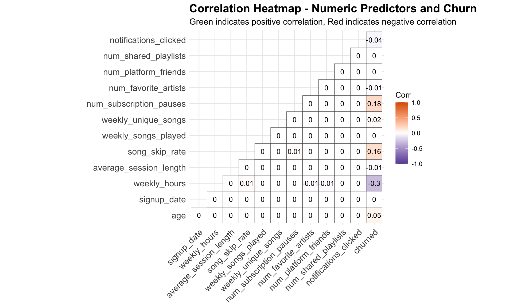

Client: PlaylistPro
Executive Summary: PlaylistPro, a subscription-based music streaming service, faced a critical business challenge: nearly 50% of subscribers were churning, directly threatening recurring revenue and long-term profitability. This project delivered a comprehensive analytics solution combining predictive modeling and prescriptive optimization to identify at-risk customers early and design targeted retention strategies that maximize customer lifetime value.
The numbers told a stark story: 51.3% of PlaylistPro's 125,000 customers had churned. This wasn't a small segment or niche issue—it was a systemic retention crisis threatening the company's survival. With churn and retention nearly equal, every customer decision mattered.
The business question was urgent: How can we identify customers at highest risk of churning before they leave, and deploy retention resources optimally to protect revenue?
The company's reactive approach wasn't working. Marketing dollars were wasted on loyal customers who would have stayed anyway, while truly at-risk users received insufficient attention. PlaylistPro needed a data-driven system to predict churn risk and guide intervention strategies.
This analysis directly addresses the needs of multiple organizational stakeholders:
Analyzing 125,000 customer records across 19 behavioral and demographic variables, we discovered that no single factor explained churn. The correlation analysis revealed weak relationships across the board:
This finding was crucial: churn wasn't driven by one obvious problem we could fix. Instead, it emerged from patterns of behavior that, when combined, signaled customer disengagement. The business needed a sophisticated model to detect these patterns early.
We built and tested four machine learning models to predict which customers would churn: Logistic Regression (baseline), Stepwise Logistic Regression (feature selection), Random Forest (ensemble), and XGBoost (gradient boosting).
XGBoost emerged as the winner with 84.79% accuracy and an AUC of 0.94—meaning it could reliably rank customers by churn risk. But accuracy alone wasn't the goal. We needed to understand why the model made its predictions so we could guide business strategy.
Across all models, three factors consistently ranked as the most powerful churn predictors:
This cross-model consistency gave leadership confidence: these weren't statistical artifacts—they were real, actionable business levers.
Prediction without action is just insight without impact. We designed a real-time, risk-based intervention system that personalizes retention offers at the moment customers attempt to cancel:
This tiered approach optimizes every dollar spent on retention. Low-risk customers don't get unnecessary discounts. High-risk customers receive compelling offers calibrated to their likelihood of churning. The system operates automatically, presenting personalized offers in under 200ms during the cancellation flow.
1. Launch Engagement Campaigns Immediately
Weekly listening hours is the dominant predictor. Marketing should deploy personalized email nudges featuring new releases in users' favorite genres, push notifications for followed artists, and weekly listening summaries that gamify usage. Monitor engagement as a leading indicator and trigger retention offers when usage drops.
2. Redesign Free and Student Tier Strategy
These tiers exhibit dramatically higher churn. Leadership must decide: Are they effective acquisition funnels worth the churn cost, or should resources focus on converting and retaining paying customers? Consider tier-specific campaigns emphasizing upgrade paths and transition discounts.
3. Proactively Address Service Friction
High inquiry frequency predicts churn because it signals unresolved issues. Flag customers who contact support multiple times within a short window for retention follow-up. Analyze inquiry themes (billing issues, technical bugs, feature confusion) to identify and fix systemic product problems.
4. Improve Content Recommendation Quality
Higher skip rates correlate with churn. Invest in recommendation algorithms that dynamically adjust based on skip behavior. Introduce genre exploration features and test whether giving users more control over recommendations reduces skip rates and improves retention.
5. Segment Strategies by Age
The U-shaped age-churn relationship requires targeted approaches. For younger users, emphasize social features and gamification. For older users, simplify the interface and provide curated playlists. Middle-aged users benefit from family plans and loyalty rewards.
Explore the complete analytical methodology, model diagnostics, and statistical validation: